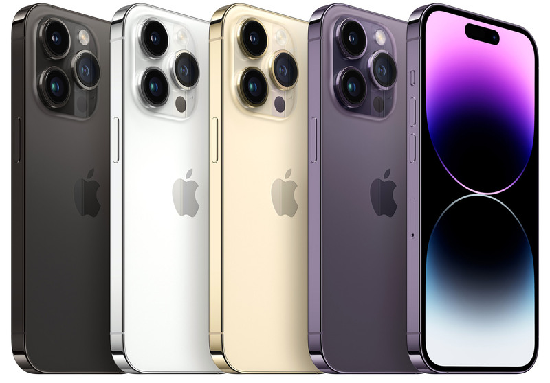

Iphone 14 Pro

Це флагманський iPhone 16-го покоління, який прийшов на зміну iPhone 13 Pro. Пристрїй був представлений разом з iPhone 14 і iPhone 14 Plus на презентації Apple в Apple Park в Купертіно, штат Каліфорнія, 7 вересня 2022 року. Попередні замовлення на iPhone 14 Pro почали приймати 9 вересня 2022 року та смартфони стали доступними 16 вересня 2022 року.
iPhone 14 Pro і iPhone 14 Pro Max є першими iPhone, які мають новий тип вирізу на дисплеї під назвою Dynamic Island, який замінив виїмку, яка використовувалася з моменту появи iPhone X. Поряд з iPhone 14 моделі iPhone 14 Pro отримали двонаправлене супутникове підключення, щоб зв’язуватися зі службами екстреної допомоги, коли смартфони знаходяться поза зоною дії Wi-Fi і стільникових мереж.Моделі iPhone 14 Pro і iPhone 14 Pro Max (а також iPhone 14 і 14 Plus), які продаються в Сполучених Штатах, не підтримуватимуть фізичні SIM-картки, що робить їх першими моделями iPhone після CDMA-варіанту iPhone 4, які не мають модуля для зчитування дискретних SIM-карток.
Купити Iphone 14 Pro